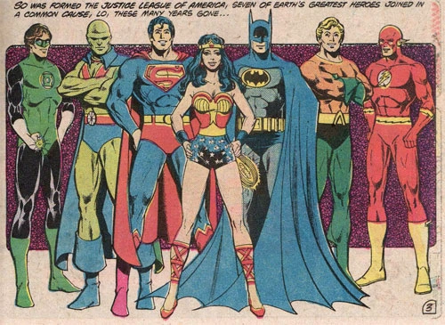
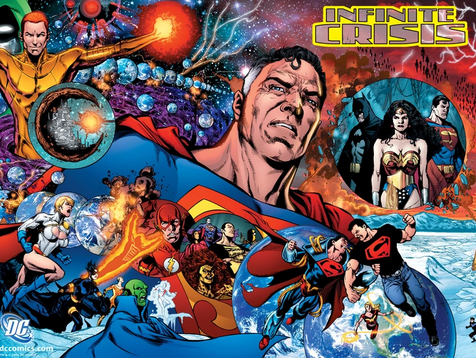
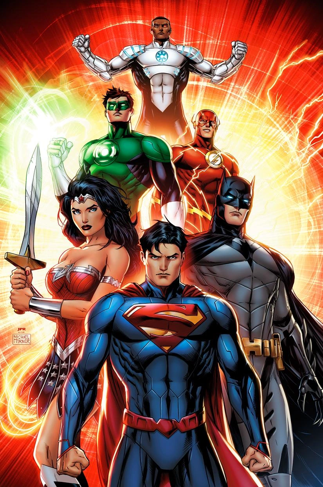

La Liga de la Justicia se fundó alrededor de febrero 20 de 2003, después de que siete héroes (Superman, Batman, Mujer Maravilla, Flash, Linterna Verde, Aquaman y Detective Marciano) tuvieran que trabajar juntos para derrotar la invasión de unos seres de energía conocidos como los Appellaxianos.
Inicialmente se basaron en el Santuario Secreto, una cueva excavada en Monte Justicia por Superman y Linterna Verde. Al principio no hicieron pública su alianza. En 2004, la Liga se había expandido a diez miembros: Flecha Verde, Hombre Halcón y Mujer Halcón se habían unido. Dos años más tarde, el Guasón descubrió la ubicación del Santuario y atacó a Lucas Carr y a la Liga en su interior. La Liga se hizo pública poco después. En 2008, seis nuevos miembros se unieron al grupo. Se eligió un nuevo escondite: el satélite en órbita Atalaya, aunque también utilizaron el Salón de la Justicia como fachada para turistas y medios de comunicación.
La Liga de la Justicia es una organización compuesta por los superhéroes más poderosos del mundo dedicados a la lucha contra el mal y la injusticia. Ellos trabajan juntos como un equipo que actúa como primera línea de defensa contra las amenazas terrestres y extra-terrestres de la Tierra.

Después de la recuperación exitosa del concepto de los superhéroes en la Edad de Plata, DC Comics encargó a Gardner Fox y a Mike Sekowsky el trabajo de revivir la Edad de Oro de la Sociedad de la Justicia de América. Fox fue inspirado el concepto de Liga debido a las diversas franquicias de diversos deportes en el momento (como la influida por parte de la popularidad de la NFL y la MLB) y decidió entonces crear un nuevo nombre para el proyecto, así fue como un nuevo equipo surgía y eliminaba el concepto de Sociedad al cual era anteriormente llamada la asociación de varios superhéroes, como había ocurrido anteriormente en la serie World's Finest Comics cuando se adentró en la concepción de juntar a héroes como Batman, Superman y Robin en una asociación para derrotar las fuerzas del mal. Fox y Sekowsky entonces dieron un nuevo concepto a la Sociedad, transformándola basándose en los conceptos anteriormente mencionados, creando la Liga de la Justicia de América en el año de 1960 y echando a mano la historia y los lápices en su primera aparición del equipo en la serie Brave and the Bold Vol.1 #28. Murphy Anderson también fue el entintador para esta primera historia.